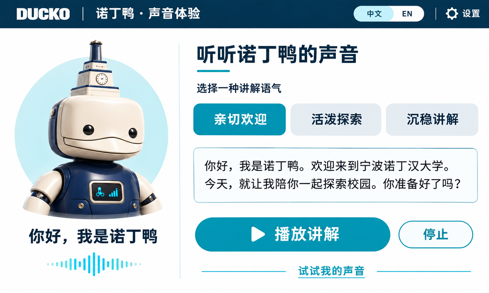

有问题，随时问我
文字问答可用
当前为手动流程演示，不会控制机器人移动。
选择一种讲解声音
点击播放，听听不同声音的校园欢迎词。
先录下或上传一段声音。可以立即试听原声；连接语音模型后，才能用你的音色朗读新内容。
你好，我是诺丁鸭。欢迎来到宁波诺丁汉大学。今天，就让我陪你一起探索校园。你准备好了吗？
建议录制 10–20 秒，安静环境、单人说话。支持 WAV / MP3 / M4A。
当前为离线试听版，未连接复刻服务。录音仅保留在当前页面，刷新后清除。
速度调整只改变播放速度，不代表模型情绪控制。
样音来源加载中。
回听刚才的提问（只留在当前页面）
示例自检不会开启麦克风。
模型只需安装一次。具体步骤见完整包内 README_ASR.md。